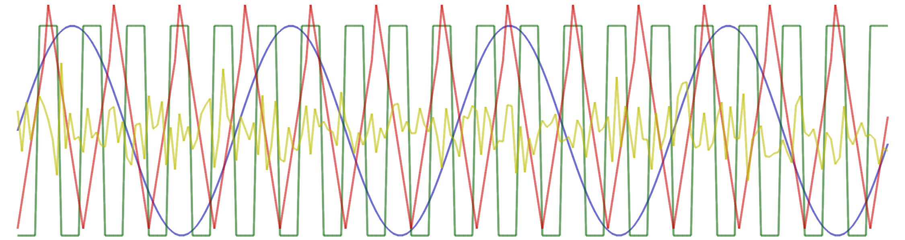

Signal generation

#include "dsp/dsp.hpp"
Here are some functions that can be used to generate test signals (periodic or random signals, intervals, ...).
Types
using dsp::OHConfig = typedef tsd::OHConfig
Functions
static Vecf linspace(float a, float b, unsigned int n)
Equidistant point interval.
static Vecf logspace(float a, float b, int n)
Interval of logarithmicly equidistant points (geometric serie).
static Veci irange(int a, int b)
Integer interval.
static Vecf trange(int n, float fs)
Time interval, with sampling frequency specified.
static Vecf randn(int n)
Normal law (column vector).
static Veccf randcn(int n)
Complexe normal law (column vector)
static Vecf randu(int n, float a=-1, float b=1)
Uniform law (column vector).
static Vecb randb(int n)
Random binary vector.
static Veci randi(int M, int n)
Categorial random vector.
entier randi(entier M)
float randu()
Uniform law (computes only one element).
float randn()
Normal law (computes only one element).
static Veccf sigexp(float f, int n)
Efficient computing of a complex exponential.
static Vecf sigsin(float f, int n)
Efficient computing of a sinusoid.
static Vecf sigcos(float f, int n)
Efficient computing of a cosinusoid.
static Vecf sigtri(int p, int n)
Generation of a triangular, periodic signal.
static Vecf sigsquare(int p, int n)
Generation of a square, periodic signal.
static Vecf sigimp(int n, int p=0)
Discret impulsion.
static Vecf sigsawtooth(int p, int n)
Sawtooth signal.
static Vecf siggsin(float f, int n, float a=10)
Sinusoïd modulated by a Gaussian.
static Vecf siggauss(int n, float a=10)
Gaussian filtered impulse.
Vecf signyquist(int n)
Nyquist frequency signal generation (-1,1,-1,1,etc.).
static Vecf sigchirp(float f0, float f1, int n, char mode='l')
Linear or quadratic chirp.
sptr<Source<cfloat, OHConfig>> source_ohc(float freq)
Generation of an exponential signal through a harmonic oscillator.
sptr<Source<float, OHConfig>> source_ohr(float freq)
Generation of a sinusoidal signal through a harmonic oscillator.